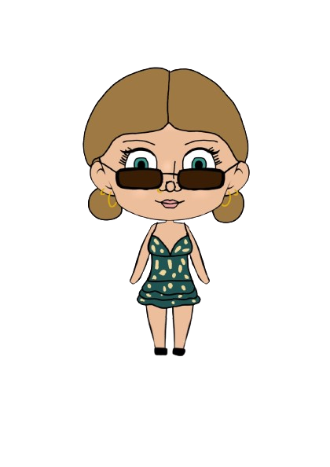

Ik vind Berlijn echt een leuke stad. Het is heel somber maar toch ook heel cool.
Aankomende vakantie ga ik naar Berlijn. Hier komen de updates
Vandaag (8 augustus 2026) ben ik me aan het voorbereiden op de reis. Na een hele paklijst gemaakt te hebben kwam ik erachter dat niet alles past in de koffer (-_-;). Ondertussen zijn we heen en weer aan het appen met de jongens en bespreken wie wat meeneemt en hoelaat we de trein nemen. We meeten om 7.45 op Nijmegen cs dus das vroeg. Ook hebben we gehoord dat we t huis uit geschopt worden als we te luid zijn in de rusturen. Ik ben benieuwd hoe het gaat zijn.
Hallo! Het is momenteel 17.19u en we zijn aangekomen in het huisje en hebben de kamers verdeeld. Vandaag hadden we de treinreis van 6 uur, met daar nog een uur vertraging bij (dus 7) zonder airco en met weinig beenruimte. Ik slaap met Aaron naast de voordeur. Naast ons slapen Faas en Daniel. Dan heb je tegenover ons hokje de gang en een badkamer. Daarnaast slapen Julian en Thomas en naast hun Timo en Jules. Dan eindigt de gang en heb je een tweede badkamer en tegenover de kamer van Jules en Timo de keuken. Op dit moment zijn de meeste jongens net gedoucht of aan het douchen en Faas is naast me eafc26 aan t spelen terwijl Aaron en Thomas achter me Duitse tv kijken. Daniel heeft naar veluidt nu al gekotst.
Het is momenteel 20.24u. We hebben net gegeten bij een Aziatisch restaurant . Dit restaurant was super goedkoop en vullend. Timo had muy pittig eten gekozen en moest huilen. Vervolgens ging iedereen zelf proeven hoe pittig de pepers waren, waaronder ik (en toen kreeg ik de peper in mn oog (>w<)). Het is vandaag natuurlijk zondag in Duitsland dus we hebben geen open supermarkten. We zijn daarom net naar een kiosk geweest en hebben wat soda en drank gehaald.

Ik vind Berlijn echt een leuke stad. Het is heel somber maar toch ook heel cool.